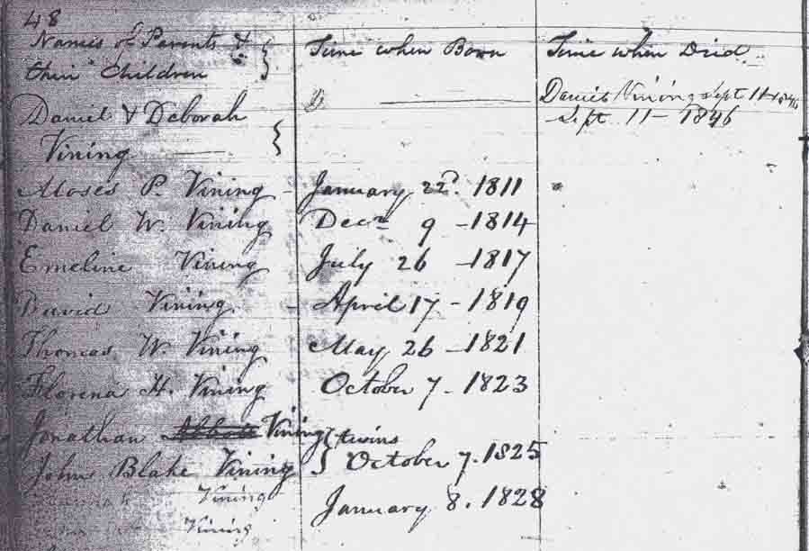

Marriage Data
Marriage intentions of Daniel Vining and Deborah Waters, from Windsor, Kennebec County, Maine, town records (book 1, page 33).Birth Data
Birth record of Daniel Waters Vining, son of Daniel and Deborah (Waters) Vining, from Windsor, Kennebec County, Maine, town records (book 1, page 85).Family Data
Family record from Salem, Franklin County, Maine, town records (Maine State Archives, vital records roll 496):
Census Data
| 1820 | 1830 | 1840 | 1850 | 1860 | 1870 | |
| Daniel Vining | M 26–45 | M 40–50 | M 50–60 | dead | ||
| Deborah (Waters) Vining | F 26–45 | [see note below] | F 50–60 [sic] | 59 | ? | ? |
| Moses P. Vining | M under 10 | M 15–20 | married and living in separate household | |||
| Daniel Waters Vining | M under 10 | M 15–20 | living in separate household | |||
| Emeline Carleton Vining | F under 10 | F 10–15 | [living? in separate household] | |||
| David W. Vining | M under 10 | M 10–15 | M 20–30 | married and living in separate household | ||
| Thomas W. Vining | M 5–10 | M 15–20 | married and living in separate household | |||
| Florena H. Vining | F 5–10 | F 15–20 | [living? in separate household] | |||
| Jonathan Vining | M 5–10 | M 15–20 | [living? in separate household] | |||
| John Blake Vining | M 5–10 | M 15–20 | living in separate household | |||
| Hannah Vining | F under 5 | F 10–15 | 21 | ? | ? | |
| Ezra A. Vining | M 5–10 | 19 | ? | ? | ||
| Deborah Augusta Vining | F under 5 | 12 | ? | ? |